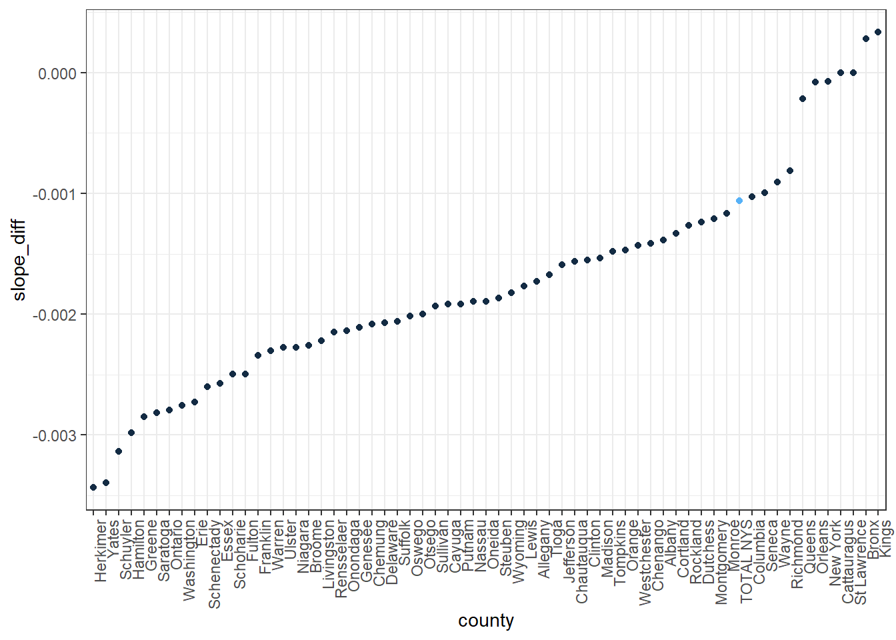
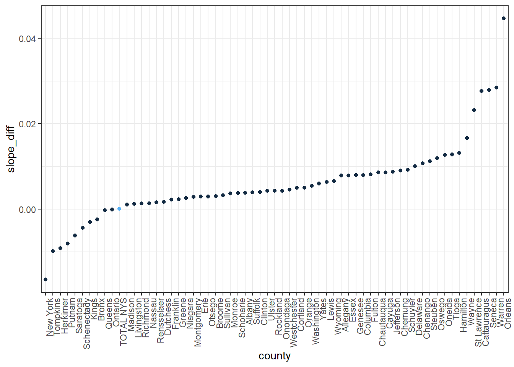

library(tidyverse)
library(ggplot2)
library(plotly)organ = read_csv("data/organ_spline.csv") ## Parsed with column specification:
## cols(
## pop_2012 = col_integer(),
## chart_month = col_character(),
## county = col_character(),
## eligible_population_enrolled = col_double(),
## location = col_character(),
## month = col_integer(),
## opo = col_character(),
## population_18_estimate = col_integer(),
## registry_enrollments = col_integer(),
## year = col_integer(),
## dummy_day = col_character(),
## date = col_date(format = ""),
## year_sp_2012 = col_integer(),
## year_sp_2016 = col_integer(),
## year_sp_2017 = col_integer(),
## total_days = col_integer()
## )organ %>%
filter(date == as.Date("2018-09-01")) %>%
filter(county!= "TOTAL NYS") %>%
plot_ly(x = ~population_18_estimate, y = ~eligible_population_enrolled, type = "scatter", mode = "markers",
alpha = 0.5,
text = ~county)#If you have a county that has a higher population of people, a higher percent enrolled is more helpful in terms of number of organs than if a county has a lower population of people, so New York should be taking advantage of larger counties, but this plot shows that larger counties tend to have lower percentages of eligible people enrolled.
#smaller counties have higher percentages enrolleddiff_diff_organ = organ %>%
filter(date == as.Date("2014-07-01") | date == as.Date("2012-07-01") | date == as.Date("2010-07-01")) %>%
select(county, date, eligible_population_enrolled) %>%
group_by(county) %>%
spread(value = eligible_population_enrolled, key = date) %>%
janitor::clean_names() %>%
mutate(slope_2012_2010 = (x2012_07_01-x2010_07_01)/as.integer(as.Date("2012-07-01")-as.Date("2010-07-01")),
slope_2014_2012 = (x2014_07_01-x2012_07_01)/as.integer(as.Date("2014-07-01")-as.Date("2012-07-01")),
slope_diff = slope_2014_2012-slope_2012_2010) %>%
ungroup() %>%
mutate(county = fct_reorder(county, slope_diff)) %>%
mutate(is_total_nys = ifelse(county == "TOTAL NYS", 1, 0))
diff_diff_organ_ny = filter(diff_diff_organ, county %in% c("TOTAL NYS"))
ggplot(diff_diff_organ, aes(x = county, y = slope_diff, color = is_total_nys)) +
geom_point() +
theme(axis.text.x = element_text(angle = 90, hjust = 1)) +
theme(legend.position = "none")
Based on this plot, it appears that most counties’ slopes actually decreased following the 2012 law (I used the two year period before and after). The percent enrolled countinues to increase, but it does so at a smaller rate.
diff_diff_organ_2017 = organ %>%
filter(date == as.Date("2018-09-01") | date == as.Date("2017-02-01") | date == as.Date("2015-07-01")) %>%
select(county, date, eligible_population_enrolled) %>%
group_by(county) %>%
spread(value = eligible_population_enrolled, key = date) %>%
janitor::clean_names() %>%
mutate(slope_2017_2015 = (x2017_02_01-x2015_07_01)/as.integer(as.Date("2017-02-01")-as.Date("2015-07-01")),
slope_2018_2017 = (x2018_09_01-x2017_02_01)/as.integer(as.Date("2018-09-01")-as.Date("2017-02-01")),
slope_diff = slope_2018_2017-slope_2017_2015) %>%
ungroup() %>%
mutate(county = fct_reorder(county, slope_diff)) %>%
mutate(is_total_nys = ifelse(county == "TOTAL NYS", 1, 0))
ggplot(diff_diff_organ_2017, aes(x = county, y = slope_diff, color = is_total_nys)) +
geom_point() +
theme(axis.text.x = element_text(angle = 90, hjust = 1)) +
theme(legend.position = "none")
Almost all the slopes increase after 2017. NY county, one of the larger counties in NY, is one of the 7 counties that has a decreasing average slope.